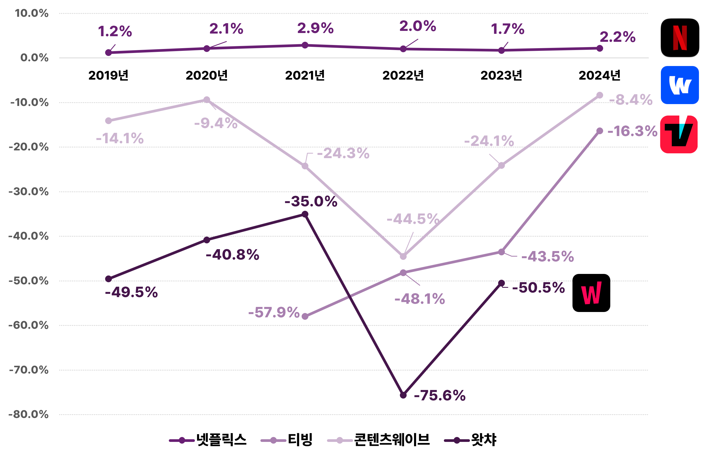

국내 OTT 시장은 티빙과 웨이브의 합병을 앞두고 관망하는 형세다. 국내에서 사업을 영위하는 글로벌 OTT 사업자 중에는 여전히 넷플릭스가 독주하고 있다. SBS가 넷플릭스와 2025년 1월부터 6년간 콘텐츠 공급에 관한 전략적 파트너십을 체결했다는 소식에 방송사 역시 들썩이고 있다. 한편, 직접 국내 시장에 뛰어든 디즈니플러스나 애플TV플러스는 그간 몇 편의 오리지널로 화제성을 잠시 잡았음에도 불구하고 뚜렷한 시장의 성과로 연결되지는 않는 모습이다. 자본 공세로 국내 OTT 서비스 시장의 점유율을 높여가고 있는 쿠팡플레이는 최근 미국 드라마의 명가 HBO와 손잡았다. 뚜렷한 성과가 없었던 지난 2022년 웨이브와 HBO의 협업과는 어떻게 달라질지 주목해볼 만하다.
2025년 3월, 공정거래위원회가 티빙과 콘텐츠웨이브 합병에 대한 ‘임원 겸임 기업결합심사’를 시작했다는 소식이 전해졌다.¹⁾ 24년 역시 글로벌 OTT 넷플릭스의 독주가 계속되고 있는 가운데 국내 토종 OTT들은 생존의 길을 적극적으로 모색하고 있다.
2024년 넷플릭스의 매출액은 9,496억 원으로 전년 대비 9.3% 증가한 것으로 나타났다. 넷플릭스의 수익은 스트리밍 수익이 평균 95%를 차지한다. 2020년에 오리지널 콘텐츠 제작부터 영화, 드라마, 예능 등 다양한 장르의 콘텐츠 수급 및 투자, 제작현장 관리 및 지원을 전담하기 위한 ‘넷플릭스엔터테인먼트코리아’를 설립하면서, 기존의 '넷플릭스서비시스코리아'에서는 OTT 서비스 운영 및 가입자 관리, 기술/정책지원, 마케팅 등을 담당하는 것으로 업무가 구분되었다. 본 매출액은 두 기업 매출액의 합이다. 그리고 95%의 스트리밍 수익은 바로 '넷플릭스서비시스코리아'에서 발생하는 매출액이다.
한편, 비록 매출이 넷플릭스의 절반 수준이지만, 티빙 역시 전년 대비 33.4% 증가한 4,355억 원의 매출을 기록하여 국내 OTT 서비스 시장 규모가 점진적으로 증가하고 있는 것으로 나타났다. 그러나 콘텐츠웨이브의 24년 매출액은 3,313억 원으로 23년 3,339억 원보다 –0.8% 감소한 것으로 나타났다. 한편 구글의 유튜브에서 발생하는 매출을 살펴보기 위해 구글코리아의 재무제표 매출액 중 유튜브 서비스 관련 연관성이 높은 “광고 및 기타 리셀러 수익”²⁾ 만 발췌하여 살펴본 결과 2019년에 759억 원에 불과했던 매출액이 2024년에는 1,761억 원으로 크게 증가한 것으로 나타났다.
[그림 1] 연도별 국내 OTT 서비스 사업자 매출액
(출처: 전자공시시스템(https://dart.fss.or.kr))
주1) 넷플릭스는 2020년 9월에 콘텐츠 수급 및 투자를 전문으로 하는 별도 법인 '넷플릭스 엔터테인먼트 Ltd.‘를 설립하였음. 2021년 넷플릭스 매출은 신규 법인까지 포함한 금액임
주2) 왓챠의 매출액에는 종속기업의 성과가 포함된 금액임(연결재무제표 반영)
주3) 콘텐츠웨이브 매출액에는 종속기업 스튜디오웨이브주식회사와 wavve Americas, Inc가 포함됨, 단, 스튜디오웨이브주식회사는 2024년에 청산되어 2024년에는 포함되지 않음
주4) 구글코리아는 재무제표 매출액 중 유튜브 서비스 관련 연관성이 높은 “광고 및 기타 리셀러 수익”만 발췌하여 제시함>
참고) 쿠팡플레이는 별도의 법인으로 등록되지 않고 쿠팡 '와우 멤버십'의 부가서비스 성격으로 운영되기 때문에 쿠팡의 국내 사업보고서에서 별도의 매출을 추적하기 어려워 주요 사업자임에도 불구하고 본 데이터에 반영되지 못함
[그림 2] 넷플릭스 수익구조
(출처: 넷플릭스코리아 연도별 사업보고서 재구성)
여전히 국내 OTT 시장 규모는 점진적으로 커지고 있으나, 매출액에서 원가와 판관비를 제외한 실질적인 수익인 영업이익을 보면, 넷플릭스만이 흑자를 내고 있는 것으로 나타났다. 넷플릭스는 2019년 22억 원이었던 영업이익이 2024년에는 206억 원으로 8배 이상 증가했다. 반면에 국내 OTT 사업자는 최근 6년 동안 적자를 면치 못하고 있다. 가장 적자폭이 큰 사업자는 티빙과 콘텐츠웨이브다. 티빙은 2023년 –1,420억 원으로 역대 가장 많은 영업손실을 보이다가 2024년에는 절반 수준인 –711억 원으로 회복하는 중이다. 콘텐츠웨이브는 2022년 –1,217억 원으로 최대의 영업손실을 보이다가 점진적으로 감소하는 추세다. 그러나 합병을 앞둔 두 기업의 영업손실의 합이 여전히 –1,000억 원을 넘는다는 점을 고려하면 수익성 개선이 가장 시급하다고 할 수 있을 것이다.
[그림 3] 연도별 국내 OTT 서비스 사업자 영업이익
(출처: 전자공시시스템(https://dart.fss.or.kr))
OTT 서비스 사업자 중 매출액이 가장 높고 유일하게 영업이익을 내고 있는 넷플릭스의 수익성이 가장 높지만 지난 6년 간 2%대에서 큰 변동은 없는 것으로 나타났다. 오히려 한창 코로나 시국이었던 2021년에 2.9%로 가장 높은 수익을 보인 후 감소하는 추세다.
반면에 티빙, 콘텐츠웨이브, 왓챠는 여전히 마이너스 수익성을 보이지만 손실폭이 크게 감소하는 추세다. 특히 2023년 대비 2024년에 크게 수익성이 회복되고 있는 모습이다. 그러나 이러한 수익성의 감소는 매출의 증대가 아니라 영업손실의 감소에 있다는 면에서 함의하는 바가 크다. 즉, OTT 사업자가 시장에서의 불확실성이 큰 콘텐츠에 대한 적극적인 콘텐츠 투자를 축소하면서 영업손실이 줄어들었다는 것을 의미하는 것이기 때문에 영업손실의 회복세가 콘텐츠산업의 성장으로 연결되지 못한다는 점에서 마냥 긍정적으로 볼 수는 없다고 할 수 있을 것이다.
[그림 4] 연도별 국내 OTT 서비스 사업자 수익성(영업이익률³⁾)
(출처: 전자공시시스템(https://dart.fss.or.kr))
- ¹⁾ 윤수현(2025. 03. 28). 티빙·웨이브 합병 가시화? 공정위 기업결합심사 시작했다. <미디어오늘> https://www.mediatoday.co.kr/news/articleView.html?idxno=325216
- ²⁾ 유튜브의 광고수익은 주로 구글(Google) 사이트 또는 구글 네트워크 회원의 사이트 광고 재판매 또는 관련 지원 용역 제공으로 수익을 창출하며, 구글 사이트 매출은 주로 구글 웹사이트, 구글 검색 앱 및 메일(Gmail), 구글 지도, 구글 플레이 및 유튜브와 같이 구글이 소유하거나 운영하는 다른 사이트에서 발생한 광고 매출로 구성됨. 구글 네트워크 멤버 사이트 매출은 주로 구글 네트워크 멤버의 사이트에서 발생한 광고 매출로 구성됨. 따라서 OTT 서비스의 영역인 유튜브로부터 발생한 수익이 일부로 포함되어 있다고 할 수 있어 매출액 규모의 해석에 유의해야 함
- ³⁾ 영업이익율 = (영업이익/매출액) ×100